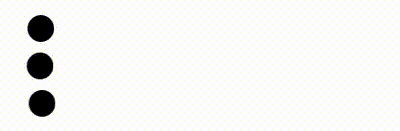
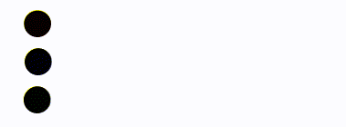
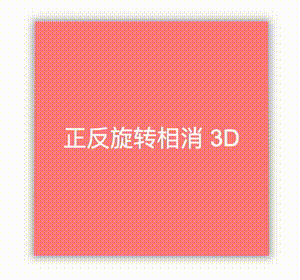
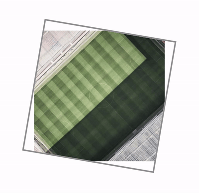
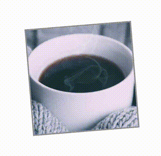

- 56 不定宽文本溢出跑马灯效果完美解决方案
- 55 巧用 CSS 变量，实现动画函数复用
- 54 角向渐变的妙用
- 53 有趣的六芒星能力图动画
- 52 有意思的气泡 Loading 效果
- 51 CSS 原生支持的三角函数
- 50 有意思的网格下落加载效果
- 49 有意思的 Emoji 3D 表情切换效果
- 48 神奇的 3D 磨砂玻璃透视效果
- 47 抢先体验！超强大的 Anchor Positioning 锚点定位
- 46 CSS 也能实现碰撞检测
- 45 现代 CSS 解决方案 - 数学函数 Round
- 44 现代 CSS 解决方案 - 原生嵌套
- 43 神奇的背景，生化危机4日食 Loading 动画还原
- 42 当路径动画遇到滚动驱动
- 41 CSS 还原拉斯维加斯球数字动画
- 40 单标签下多色块随机文字随机颜色动画
- 39 CSS 也能实现 if 判断？实现动态高度下的不同样式展现
- 38 Flex 布局下居中溢出滚动截断问题
- 37 带圆角的虚线边框
- 36 现代 CSS 解决方案：文字颜色自动适配背景色
- 35 神奇的 3D 卡片反光闪烁动效
- 34 现代 CSS 解决方案：accent-color 强调色
- 33 巧用 has 和 drop-shadow 实现复杂布局效果
- 32 巧用 CSS + SVG 实现复杂线条光效动画
- 31 极具创意的鼠标交互动画
- 30 标准滚动条控制规范 scrollbar-color 和 scrollbar-width
- 29 类 ChatGpt 多行文本打字效果
- 28 神奇的卡片 Hover 效果与 Blur 的特性探究
- 27 渐变边框文字效果
- 26 巧妙使用多种方式实现单侧阴影
- 25 全尺寸的带圆角的渐变边框
- 24 开发中保证你用得到的 css 小技巧
- 23 您应该了解的 15 个有用的 CSS 属性
- 22 CSS 行元素的截断样式 box-decoration-break 属性
- 21 用 SASS 简化媒体查询
- 20 为什么你应该停止使用传统的 margin 和 padding 来设置 CSS 样式
- 19 sass 优化响应式布局代码
- 18 盘点 CSS 文本两端对齐的 N 种方式
- 17 如何修改滚动条的样式
- 16 CSS 模拟图片透明的棋盘背景
- 15 文本描边完美实现
- 14 你需要自定义 @property 而不是 CSS 变量的情况
- 13 从高度 0 过渡到自动高度
- 12 一些 css 语法解释
- 11 scss 日常用法
- 10 sass 指南
- 09 CSS 颜色设置透明度的新姿势
- 08 CSS 属性 appearance
- 07 CSS 动画性能优化
- 06 CSS 功能特性
- 05 CSS 中的 var() 函数
- 04 15 个你不知道的 CSS 属性
- 03 will-change
- 02 normalize.css 清除元素默认样式
- 01 纯 CSS 获取屏幕宽高
巧用 CSS 变量，实现动画函数复用
HaoTian · 2024-12-26 16:25:33
本文将介绍一种基于 CSS 变量技巧，通过合理使用 CSS 变量，实现 CSS 动画 @keyframes 的复用。
CSS 变量
CSS 变量大家应该都比较熟悉了，已经不能算是新知识了，快速过一遍。
CSS 变量（CSS Variable），在之前也叫做 CSS 自定义属性，其使用方式如下：
// 声明一个变量：
:root {
--bgColor: #000;
}
这里我们借助了上面 #12、结构性伪类 中的 :root{ } 伪类，在全局 :root{ } 伪类中定义了一个 CSS 变量，取名为 --bgColor 。
定义完了之后则是使用，假设我要设置一个 div 的背景色为黑色：
.main {
background: var(--bgColor);
}
这里，我们在需要使用之前定义变量的地方，通过 var(定义的变量名) 来调用。
在 @Keyframes 中使用 CSS 变量
OK，回归我们的正题。巧用 CSS 变量，实现动画函数复用。
假设，我们现在有多个元素，需要实现一个位移动画，从位置 A 位移到 位置 B，位置 A 相同，但是位置 B 不一样，像是这样：

正常而言，由于终点不一样，我们可能需要实现 3 个不一样的 @keyframes，像是这样：
<ul>
<li></li>
<li></li>
<li></li>
</ul>
li:nth-child(1) {
animation: move1 2s linear;
}
li:nth-child(2) {
animation: move2 2s linear;
}
li:nth-child(3) {
animation: move3 2s linear;
}
@keyframes move1 {
60%,
100% {
transform: translate(150px);
}
}
@keyframes move2 {
60%,
100% {
transform: translate(120px);
}
}
@keyframes move3 {
60%,
100% {
transform: translate(200px);
}
}
这个代码有问题吗？没有。
但是，我们可以利用 CSS 变量，让它变得更为简洁，我们改造一下 @keyframes 代码，将固定的位移值，变成一个变量：
@keyframes move {
60%,
100% {
transform: translate(var(--dis));
}
}
由于 CSS 变量是存在作用域的，我们可以通过 CSS 变量的方式，给每一个 li 定义一个不同的 --dis 变量，像是这样：
li:nth-child(1) {
--dis: 150px;
}
li:nth-child(2) {
--dis: 120px;
}
li:nth-child(3) {
--dis: 200px;
}
这样，虽然动画的结束点不一样，但是我们利用 CSS 变量，复用了同一个 @keyframes 函数：
通过内联 style 属性传入自定义变量
除了通过在 <style> 内传入不同的自定义变量，我们还可以通过内联 style 属性传入自定义变量。
我们再改造一下我们的 @keyframes:
@keyframes move {
60%,
100% {
transform: translate(var(--end));
background: var(--color);
}
}
这一次，我们不需要通过 :nth-child() 去修改每一个 li 的 CSS，而是通过 HTML 元素的内联 style 属性，像是这样：
<ul>
<li style="--end: 150px; --color: red;"></li>
<li style="--end: 200px; --color: blue;"></li>
<li style="--end: 120px; --color: green;"></li>
</ul>
是的，每个 li 元素的 @keyframes 可以读取到每个 li 的 style 里面定义的不一样的 CSS 变量。
这样，我们就可以得到如下效果：

完整的代码，可以戳这里：CodePen Demo -- 巧用 CSS 变量，实现动画函数复用
实战演练
下面我们实战演练一下，上一点难度。
在很久之前，我们实现过这样一个动画效果：

这个动画效果的实现方式在于：
- 父级元素实现一个 rotateZ(360deg) 的匀速动画
- 子级元素实现一个反向的 rotateZ(-360deg) 的匀速动画
- 给父级元素添加一个 rotateX(40deg) 的动画
由于父容器和子容器同时相反向旋转，所以子元素看上去其实和没有旋转是一样的。但是由于又添加了一个 rotateX(40deg) 动画，因此看上去就会有这样一种 3D 效果。
在之前，我们的代码是这样的：
<div class="reverseRotate">
<div class="rotate"></div>
</div>
.rotate {
animation: rotate 5s linear infinite;
}
.reverseRotate {
animation: reverseRotate 5s linear infinite;
}
@keyframes rotate {
0% {
transform: rotateX(0deg) rotateZ(0deg);
}
50% {
transform: rotateX(40deg) rotateZ(180deg);
}
100% {
transform: rotateX(0deg) rotateZ(360deg);
}
}
@keyframes reverseRotate {
0% {
transform: rotateZ(0deg);
}
100% {
transform: rotateZ(-360deg);
}
}
可以看到，我们这里实现了两个动画效果：
- @keyframes rotate {} 父容器的旋转动画
- @keyframes reverseRotate {} 子容器的旋转动画
其实，这里，运用今天的技巧，我们可以把两个动画合成为一个，利用 CSS 自定义变量进行控制。改造后更简洁的 CSS 代码如下：
.rotate {
--degZ: 360deg;
--degZMiddle: 180deg;
--degX: 30deg;
animation: rotate 5s linear infinite;
}
.reverseRotate {
--degZ: -360deg;
--degZMiddle: -180deg;
--degX: 0;
animation: rotate 5s linear infinite;
}
@keyframes rotate {
0% {
transform: rotateX(0deg) rotateZ(0deg);
}
50% {
transform: rotateX(var(--degX)) rotateZ(var(--degZMiddle));
}
100% {
transform: rotateX(0deg) rotateZ(var(--degZ));
}
}
是的，我们可以得到同样的效果！
完整的代码，你可以戳这里：CodePen DEMO -- Css 动画正反旋转相消
图片旋转配合容器旋转
下面，我们再来尝试一个有意思的动画效果，图片旋转配合容器旋转。
在上述的基础上，如果我们把子元素，改成图片，整个效果就会有意思不少，我们稍微改变一点点代码：
<div class="reverseRotate">
<img class="rotate" src="https://picsum.photos/1000/1000?random=5" alt="" />
</div>
.rotate,
.reverseRotate {
width: 60vh;
height: 60vh;
}
.reverseRotate {
position: absolute;
top: 50%;
left: 50%;
transform: translate(-50%, -50%);
border: 3px solid #999;
overflow: hidden;
}
.rotate {
position: absolute;
top: 50%;
left: 50%;
transform: translate(-50%, -50%);
width: 100%;
height: 100%;
}
.rotate {
--degZ: 360deg;
animation: rotate 5s linear infinite;
}
.reverseRotate {
--degZ: -360deg;
animation: rotate 5s linear infinite;
}
@keyframes rotate {
0% {
transform: translate(-50%, -50%) rotateZ(0deg);
}
100% {
transform: translate(-50%, -50%) rotateZ(var(--degZ));
}
}
这里，我们做了什么事情呢？
- 去掉了 3D 效果
- 给外层容器加了边框
- 内层图片基于父容器绝对定位，水平垂直居中
- 内外两层容器反向旋转 360° 动画
这样，我们就能看到，虽然内外两层容器同时在进行相反方向的旋转 360° 动画，但是内部的图片其实是静止不动的！
效果如下：

由于，内部图片的大小为父容器的 100%，所以在旋转过程中，父容器会有明显的无法包裹住整个图片的情况。
这个很好解决，我们只需要把图片大小调整大一点：
// ... 其它代码不变
.rotate {
width: 150%;
height: 150%;
}
.rotate {
--degZ: 360deg;
animation: rotate 5s linear infinite;
}
正常而言，对于正方形容器，内部图片设置到 141% 即可满足父容器旋转过程，可以一直包裹住图片的效果。那么，我们就能得到这样一种效果：

完整的代码，你可以戳这里：CodePen Demo -- Css 动画正反旋转相消
Grid 布局配合正反旋转动画
当然，上述当只有一个容器的时候，整个动画效果还不够震撼。
如果我们可以把这个效果融合进整个布局的动画之中，整个效果又会完全不一样。
在 Rotating gallery with CSS scroll-driven animations 这篇文章中，作者提供了一种非常巧妙的思路，将 Grid 布局动画与上述动画效果巧妙的结合了起来。
首先，我们利用 Grid 布局，实现这样一个简单的网格布局结构：
<div class="container">
<div class="A">
<img src="https://picsum.photos/600/600?random=1" alt="" />
</div>
<div class="B">
<img src="https://picsum.photos/600/600?random=2" alt="" />
</div>
<div class="C">
<img src="https://picsum.photos/600/600?random=3" alt="" />
</div>
<div class="D">
<img src="https://picsum.photos/600/600?random=4" alt="" />
</div>
<div class="E">
<img src="https://picsum.photos/600/600?random=5" alt="" />
</div>
</div>
.container {
width: 60vmin;
height: 60vmin;
display: grid;
grid-template-columns: 1fr 1fr 1fr;
grid-template-rows: 1fr 1fr 1fr;
gap: 4px;
grid-template-areas:
"E B B"
"E A C"
"D D C";
}
.container > div {
border: 3px solid #431312;
border-radius: 5px;
}
.A {
grid-area: A;
}
.B {
grid-area: B;
}
.C {
grid-area: C;
}
.D {
grid-area: D;
}
.E {
grid-area: E;
}
效果如下：

接下来，我们要做的，就是结合上面的知识点，容器滚动起来，图片反向滚动起来，配合一些 tranfrom 变换。
有了上面的铺垫，下面的新增的代码就非常好理解了：
.container > div img {
--scale: 1;
--rotation: -360deg;
position: absolute;
top: 50%;
left: 50%;
transform: translate(-50%, -50%);
width: 260%;
height: 260%;
object-fit: cover;
object-position: center;
}
.container,
.container > div img {
animation: 10s scale-up both ease-in-out infinite alternate;
}
@keyframes scale-up {
0% {
transform: translate(-50%, -50%) scale(var(--scale)) rotate(0deg);
}
100% {
transform: translate(-50%, -50%) scale(1) rotate(var(--rotation));
}
}
这样，我们就得到了一个高级感拉满的网格旋转动画：

注意，这里我们依旧是通过 CSS 自定义变量，在不同元素间，复用了同一个动画 @keyframes 函数。
完整的代码，你可以戳这里：CodePen Demo -- Grid 图片旋转动画 & 使用 CSS 变量复用动画函数